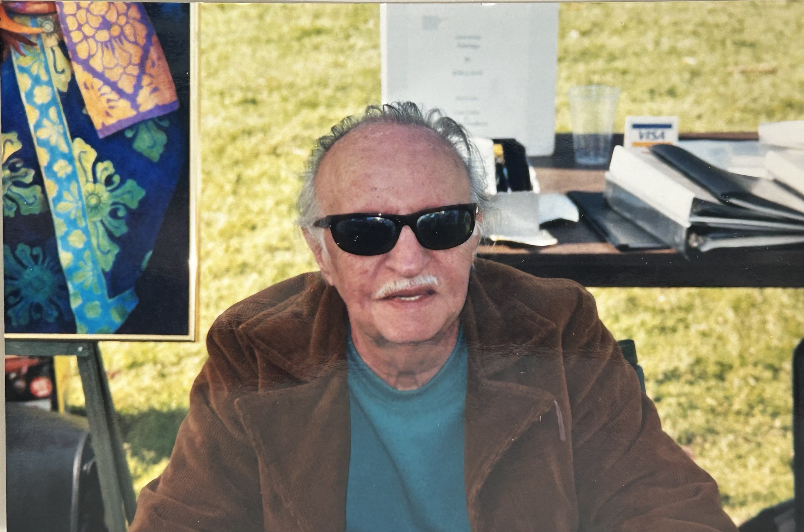

Meet Bakasan
A Life of Art, Buddhism, and Quiet Illumination
 In the hills of Topanga Canyon
In the hills of Topanga Canyon
 At a gallery exhibition
At a gallery exhibition

Sharing his work at an art fairFor more than seventy years, Bakasan has painted not merely with brush and canvas, but with spirit, devotion, and wonder.
A California Buddhist artist whose journey began in the early 1950s, Bakasan found in Buddhism not simply a philosophy, but a way of seeing the world—where every leaf, every gesture, every life is connected in a greater whole. His unusual name, Bakasan—meaning “the honorable foolish one”—was lovingly inherited from his Zen teacher as a lesson in humility, awakening, and the paradoxes that lie at the heart of spiritual discovery.
 Lady Murasaki Shikibu
Lady Murasaki Shikibu
His work is luminous, deeply contemplative, and profoundly human.
From breathtaking meditations on nature to his celebrated Women of Buddhism collection, Bakasan’s art honors the overlooked, the sacred, and the quietly extraordinary. His paintings give voice to Buddhist poets, nuns, mystics, artists, and heroines whose wisdom and compassion shaped centuries of spiritual life, yet whose stories are too often left untold.
 Topanga #46
Topanga #46
Each work is both a visual offering and an invitation—to pause, reflect, and see the world with greater depth, tenderness, and clarity.
This collection is more than art.
It is the lifelong pilgrimage of a man who has devoted himself to beauty, meditation, and enlightenment.
Welcome to the world of Bakasan.
Introduction
The Japanese name Bakasan roughly translates into English as "the honorable foolish one." One may ask why I would choose to take such a name. The answer, as with many things in Buddhism, cuts in opposite directions. During my initial exposure in the 1950's, I visited many temples seeking answers to Buddhism. As a Caucasian, I was immediately met with skepticism.
Upon my second visit to the Sen Shin Buddhist Temple in Los Angeles, I was introduced to Sensei Kuwasuke. With excitement I entered his meeting room. As I sat on the pillow, I asked simply, "What do I have to do to be a Buddhist?" He countered, "What has to be a Buddhist?" When you can answer that, I will answer the rest of your questions. For the remainder of the afternoon, I pondered his question while he read the newspaper. Once during this meeting, his hand reached around the newspaper in a fist. And slowly he opened his hand. Then he said, "Come back next week."
When I returned, I explained to him about all the components of the Universe being integral parts of a greater family. Upon hearing my answer, he muttered under his breath, "O-Baka, Baka, O-Baka, Baka" and nothing more. As anybody with even the smallest exposure to Japanese knows, "Baka" is an insulting term. Each time I visited with him, I left confused.
As my studies continued, Sensei Kuwasuke slowly began to open up his teachings to me. I progressed further along into my "awakened life." Yet after four years of guidance under Sensei Kuwasuke, he still muttered "Baka" under his breath in response to certain questions of mine. Soon thereafter he left to return to Japan. In his honor and feeling the name was appropriate, I decided to take the name of "Bakasan — the honorable foolish one."
Many years later, during a ceremony at the temple, I was introduced to visiting Buddhist scholars. Upon hearing my name, they immediately nodded their heads in approval. I asked my friend, Satoshi Miyata, what they were saying. He told me that they like your name. I asked why, knowing it meant "foolish one or, even worse, idiot." They told me that the word "O-Baka," means "foolish one," but in the tradition of the Dharma, also means, "enlightened one." I turned to Satoshi and said, "Sensei Kuwasuke has opened his hand to me once again."
This web page is dedicated to furthering the enlightenment of the readers to the joys and wonders of Buddhism and all its varied culture. It is the hope that the paintings and the brief stories of the women of Buddhism provide a starting point for the type of rich discovery that I experienced when painting these women. Furthermore, another goal of this web site is to reduce the misinterpretations and misunderstandings surrounding Buddhism. As even the novice knows, Buddhism is an empirical way of life. The path to enlightenment branches in many directions. The Buddha himself said, "Accept no one's word or authority for anything, including my own."
Artist's Statement


I have painted to honor and celebrate Buddhism since 1951. My artwork is both a path of meditation and an act of celebration. My subjects have ranged from interpretations of nature's grandeur in leaves, trees and flowers to my most recent series of 265 paintings entitled Women of Buddhism: Flowers from the Garden of Buddha. This group of paintings seeks to artistically empower and give voice to women who played important roles throughout the 2,500 years of Buddhism.
Paintings by Bakasan


When I began painting, I focused mainly on the process of painting (technique, mechanics, style, form, shadow, etc.). With such focus, it allowed me to meditate as I painted the universe as it appeared in leaves, trees and flowers. During that time, the entire process infused its meaning into the creation. Painting was not something I just did, it was something that I became a part of, and which became a part of me. Painting for me was as natural as leaves falling from a tree.
Paintings by Bakasan


In 1983, I began painting Asian women because of their magnificent robes and kimonos. At that time, the women had no names, no history or accomplishments to me. In 1989, I discovered a book entitled Women Under Primitive Buddhism: Laywomen and Almswomen by I.B. Horner (Published, 1930). Through this book, and many others, I later learned of the women who wore the robes and kimonos. Slowly, I began to unearth some of the richest treasures imaginable. I discovered marvelous poets, novelists, artists, political leaders, philanthropists, nuns, geishas, courtesans and dancers. Great names such as Mahaprajapati Gotami, Green Tara, C. Shan Miao (Zenmyo), Murasaki Shikibu, Nun Rengetsu (Lotus Moon), Princess Nukada and Lady Niijo. This rich discovery of subjects leads me on my final pilgrimage to honor and celebrate these Women of Buddhism both artistically and spiritually.
Paintings by Bakasan


Since that time, the central focus of my artwork has evolved to include not just the process of painting, but also the subjects painted. With this subtle, yet important shift, I began the process of painting the Women of Buddhism while attempting to reveal their karmic essence on canvas. For most of these women, they have long since passed from this world and even a Buddhist artist quickly finds capture of such revelation to be an imperfect art.
Paintings by Bakasan
Through the adventure and completion of each painting, my sense of wonder and awe for the inspirational lives of each of these women grows exponentially. Through their example, these women have imbued me with the priceless gift of karma shared.
In Gassho,
Bakasan
NAMU AMIDA BUTSU
Selected Biography
Donald R. Peterman — Bakasan
December 4, 1926 – August 19, 2003

Bakasan at an outdoor art fair
Born in an emerging world of prosperity after World War I, Don was dropped into the chaos of the Great Depression in 1929. The Peterman family moved to a primitive Gold Mine camp in Arizona. Only the basic elements of survival existed. After coming back to California, Don’s artistic talent revealed itself at an early age. Both Don and his mother joined the Riverside Art Association and studied with an excellent art teacher.

Don as a young man
After completing high school in Riverside, California, Don joined the United States Marine Corps. Highly skilled with firearms, his service was as a Military Policeman and Naval prison guard. Shortly after his discharge, Don and his mother moved to West Hollywood. Working in Los Angeles at Austin’s Photography Studios as a negative retoucher, he decided to move closer to his work.

Bakasan with his paintings at an art fair
Here he began visiting the Senshin Buddhist Temple. With his earnings from Austin’s studio, Don bought property in Topanga Canyon and began building a home. His life became his painting, music, extensive reading and religion. Walking Topanga paths of nature became his path to spiritual awakening. Early on, he embraced the “mind of baka” (fool), which perfectly captured the essence of shoshin—or “beginner’s mind”—in Zen Buddhism. It was at this time he took the artist’s name of Bakasan.
Bakasan’s early paintings were the beauty of nature, but extensive reading and realization led him to the history and culture of early Japan and Zen. After the death of his lover, Don left California for several years where he shared a home with friends in Tennessee.
Finding the area sadly lacking in Buddhist activities, he returned to California and settled in Gardena where he found the quiet and peaceful life he was seeking. Don has had paintings hanging in libraries, banks, galleries, featured in art exhibits and also in unknown temples in Japan. He never mastered the spoken language of his beloved Zen, but to his death, his painting was his communication with the present and the past. Upon his death, the Neptune Society cremated him and then scattered his ashes amongst the waves of the Pacific Ocean. After his transformation, the Pacific has consumed Donald’s ashes, but Bakasan lives on wherever his paintings may go and are seen.

Bakasan with one of his paintings
Random Thoughts About My Brother Don
Don’s mother’s family were German immigrants. They were the court musicians for the Kaiser and noblemen, but there was too much oppression. His father’s family were also German immigrants—probably farmers.

Don with his brother T. Robert
On a camping trip up the coast, Don fell in love with the Big Sur country and wanted to live there but it was too expensive and exclusive. Thus, he built his house in Topanga Canyon, about 100 yards down Fernwood Pacific from where we had lived.
Don was kept in Marine Boot Camp an extra two weeks to learn to swim, but he never did learn. The rest of his platoon left camp on time. All eleven planes of marines disappeared in the Washington Mountains and were found about 50 years later.
Don used to sketch in the field, then come home and paint all night. He played classical music constantly while he painted. Sometimes he had three or four paintings in progress at the same time. For most of Don’s life, he wouldn’t sell his paintings—rather he gave them to someone he thought would appreciate them.
I never knew Don to participate in any sport except fencing. He claimed he did not believe in competition, but he played Chess in High School and was ranked #1 in the Marines as a sharpshooter and an Expert Rifleman. I never could convince him everything in life is competition. Maybe it had something to do with his religion.
I often felt that Don was living in 15th century Japan. He thought that everything from Japan was best and America was inferior. Don loved the movements of traditional classical Japanese dancers and actors. He loved Japanese art and architecture. He loved Japanese ceremonies in food and living. We never understood why he didn’t move to Japan.
Education
- 1950Certificate of Fine Arts, Kahn Institute of Art, West Hollywood, California
Solo Exhibitions
- 1997Paintings by Bakasan: A Fresh Perspective From A California Buddhist, Gallery Room at Malaga Cove Plaza Gallery, Palos Verdes Estates, California, November 1–30
- 1990Leaves & Ladies, Tennessee Arts Council Building, Nashville, Tennessee, August 9–30
- 1985Bakasan & The Art of Good Karma, Topanga Art Gallery, Topanga, California, May 25–June 7
Ongoing Exhibitions
- 1975–A Celebration of Buddhism, Sen Shin Buddhist Temple, Los Angeles, California
- 1998–99Golden Pacific Arts, San Diego, California
- 1998–99The Tah Gallery, Pasadena, California
- 1998–99CM Art Gallery, Los Angeles, California and Las Vegas, Nevada
- 1998–99Kajul Gallery, Healdsburg, California
Exhibition Reviews & Publications
- 1985"Painting Topanga: 'Bakasan & The Art of Good Karma,'" Messenger: The Santa Monica Mountains News & Arts, Vol. 9, No. 10, May 23, 1985, pp. 8–9, illustrations.
- 1997"Buddhist Offering On The Hill: 'A Fresh Perspective From A California Buddhist,'" Palos Verdes Peninsula News, Vol. 60, No. 106, November 1, 1997, p. 8.
Selected Private & Public Collections
- —Michelle Denise Boyer, Esq., Venice, California
- —Steven J. Polard, Esq., Topanga, California
- —Jebb Dykstra, Esq., Los Angeles, California
- —Dr. Ann Ludwig, Ph.D., Topanga, California
- —Dr. David Hjerpe, M.D., Las Vegas, Nevada
- —Thomas B. Hjerpe, Esq., Eureka, California
- —Lynda Boyer, Santa Monica, California
- —Terry Evans, Santa Barbara, California
The Bakasan Collection
The Collection organizes my paintings into four major periods: (1) Women of Buddhism, (2) Buddhist Iconography, (3) Asian Ladies and (4) Fragments of Nature. Throughout my life as an artist, I have evolved and grown through many cycles. For better, I have been overwhelmed by images, which in time, turn themselves into paintings. For worse, I have been left fallow like an overworked field. Yet just like the cycle of the seasons, I have been transformed and regenerated by new images scattered in my mind like seeds in a field. At the end of the day, four themes represent my seasons as an artist.
My last artistic and spiritual pilgrimage centers on honoring the magnificent Women of Buddhism. Throughout the last 2,500 years, innumerable women have demonstrated with their lives, the twin pillars Buddhism: wisdom and compassion. Yet, in so many cases and in so many cultures, these women have been quietly dismissed. By painting figurative representations of these women, my goal is to finally draw attention and glory to these flowers from the garden of Buddha.
The next major theme of The Collection relates to my usage of Buddhist Iconography to illustrate the symbols of deeper meanings within Buddhism. As with all major religions, Buddhist iconography is an esoteric language of the highest art. In every Buddhist sculpture and painting, every position, gesture and form symbolically conveys deeper meanings.
The third period relates to the Textiles. During this period, I used the women in the paintings to hold up the magnificent robes, kimonos, drapes and rugs. When choreographing these paintings, my focus was entirely aimed at bringing out the beauty and splendor of these textiles. In creating these Textile paintings, this period allowed me to naturally evolve and grow into my Women of Buddhism period.
After my introduction to Buddhism, I viewed the world as a very different place. Instead of seeing nature as a unified one with all images flowing together, I saw the magnificence of each fragment by itself. I painted crystallized components of totality. I painted poems of nature. The subjects of my poems became a clearing in the woods, a single tree or just a solitary leaf. By reducing my focus, each fragment of nature revealed the totality of nature to me, as clearly as if a haiku told the history of the Universe.
Women of Buddhism
Shortly after The Buddha's enlightenment, he began to receive followers. The Buddha continually stated that he did not require disciples. Included in this group was his Aunt Mahaprajapati Gotami. Trying to defuse even her request, he recommended each follower become a forest dweller. From there, they could best serve their goal of enlightenment. As forest dwellers living on their own, many female followers of the Buddha were raped and pillaged by men. Even in Buddhism, women were met with a very difficult beginning. In response to the tragic events to his forest dwellers, The Buddha allowed Mahaprajapati Gotami to form the first order of Bikkhuni (Buddhist nuns) within walls of the city. By forming the Bikkhuni cloister within the city, these women opened their hearts to the less fortunate of the city dwellers.
As the doctrines of Buddhism took form, an unfortunate condition arose — that even the newest monk would be senior to the oldest Bikkhuni (nun). In spite of such a condition, the Bikkhuni always served The Buddha with great joy. Sadly, throughout the ages, the examples of misogyny in Buddhism have rivaled that of Judaism, Hinduism, Christianity and Islam. Nevertheless, the lives and stories of the Women of Buddhism are courageous and exciting ones. In China, Empress Wu, a devout Buddhist, was the only woman to sit on the Dragon Throne. While ruling China, she restored the Great White Horse Temple, turned over government lands to the people for hunting, and declared a three-year moratorium on taxes so that the people could catch up on their bills. The notorious Empress Wu created orphanages and hospitals. Most historians view her nineteen years on the throne as dark years in Chinese history, but viewed outside a patriarchal context, most agree that she served her time very well.
In Japan, when women were confronted with a social system and a government that would not teach them to read or write in Chinese, they created and developed their own canon of literature in Japanese hiragana. To this day, the greatest literature (novels, nikki bungaku (diaries), pillow books, haiku and tanka) of Japan remains mostly the work of Buddhist women. From Mahaprajapati Gotami of India to Empress Wu of China to Lady Murasaki Shikibu of Japan, the examples of rich and exciting lives from the Women of Buddhism continues to be an endless procession.
Lady Murasaki Shikibu
Murasaki Shikibu By Candlelight
10th Century
Bakasan, 1992
Acrylic on Canvas
20″ × 24″
All Copyrights Reserved
Sprung from royalty, Murasaki Shikibu is Japan's greatest writer. She authored one of the world's greatest novels entitled The Tale of Genji. Her use of the novel as a form of literature precedes its use in the West or even China by hundreds of years. The power of the Tale of Genji remains true even in its present English translation. To this day, the book is overwhelmingly considered one of the great novels of the world in any language. The greatness of Lady Murasaki's Tale of Genji generally overshadows her poetry, however, the novel uniquely intersplices prose and poetry throughout. Two poems by the main characters as shown below form the pivot upon which the story turns.
Lady Murasaki says:
The troubled waters
are frozen fast.
Under clear heaven
moonlight and shadow
ebb and flow.
Prince Genji responds:
The memories of long love
Gather like drifting snow.
Poignant as the mandarin ducks
who float side by side in sleep.
Okoi (The Geisha)

Okoi (The Geisha)
20th Century
Bakasan, 1994
Acrylic on Canvas
24″ × 36″
All Copyrights Reserved
Born into poverty, Okoi's family could not afford to keep her. Hoping for a better life, her mother gave her to a wealthy family. They suffered a misfortune and also couldn't keep her, so they gave her to a Geisha. The Geisha found this young child to be bright and beautiful, so she taught her the nuances of poetry, the steps of dance, the joy of music and the sophistication of conversation. After training her, the Geisha gave her the name of Okoi. Okoi began working professionally as a Geisha. Due to the costliness of the elaborate robes and kimonos, each Geisha required a sponsor. She won the Prime Minister's sponsorship.
During the Sino-Russian war, the Prime Minister was accused of being a traitor. Okoi found her home surrounded by troops and was told she must leave. Even so, Okoi's reputation grew. She met a popular actor of the day. They married, but it was not a happy one. He abandoned her, so she left and built the most important teahouse in Japan. During this time, Go-go clubs became popular. So she built the most popular Go-go club in the country. Then a devastating earthquake destroyed it. After this catastrophe, she entered the Buddhist nunnery. She passed in 1946. At her temple, patrons erected a statue entitled Okoi Kannon in honor of her.
Lady Niijo

Lady Niijo
13th Century
Bakasan, 1995
Acrylic on Canvas
18″ × 24″
All Copyrights Reserved
Lady Niijo stands out in Japanese history as one of the most intriguing and compelling women of all time. As a child of twelve, the Emperor adopted her as his child. Their complete relationship remains a mystery, but it is believed he made her his lover as well. As with many other women of her era, life in the royal court enabled her to become an expert calligrapher, painter and poet. At a young age, she took vows as an Ama (a Buddhist nun). From that time, she wandered the country from royal palaces to holy temples. As an Ama, she was privileged to pass through any area and upon arriving at a temple, she would receive food and lodging.
During one trip, she happened upon a palace run by a powerful warlord. While staying in his quarters, she painted a mural on one of his main walls. The magnificence of it left him stunned and enamored. He was so taken by her that he offered her his hand in marriage. She declined. That night she left the palace under stealth of night. Upon discovering her absence, he declared her a thief and sent out his best troops to find her and bring her back. She, of course, escaped.
The Nun Rengetsu

Nun Rengetsu (Lotus Moon)
19th Century
Bakasan, 1996
Acrylic on Canvas
18″ × 24″
All Copyrights Reserved
Beneath the echoes of the temple bell, among the shadows, warm laughter and incense, an unknown samurai entered a lady of the stream. From their dance of joy, issued a wondrous flower to become known as Rengetsu. A Pure Land Buddhist priest adopted her and made her a child of the temple. She learned two forms of martial arts, read the great works of literature, studied the great painters, learned calligraphy and became an expert at the game of Go (a Japanese form of chess). By the time Rengetsu reached sixteen years old, she was just as adept at disarming intruders with her looks as she was with her martial arts. She had already established herself as one of Kyoto's better tanka poets as well as calligraphy masters. Although she was a Go master, she could not teach it because she was a woman.
Rengetsu chose to make pottery inscribed with her poetry in her masterful calligraphy. It was said that all of Kyoto had a few pieces of Rengetsu's yaki-style pottery at one time. She was such a celebrity that she once had to move thirteen times in one year to avoid art patrons. Lotus Moon is legendary for giving all her extra earnings to equally impoverished poets and writers so that they could continue their works of art. Another legend has an intruder breaking into Rengetsu's hut. The sleeping Rengetsu awakened and said, "You won't find anything of value here, but you are welcome to whatever you need. You must be starving to be so desperate. Let me fix you a bowl of tea-rice."
Mahaprajapati Gotami

Mahaprajapati Gotami, The Buddha's Aunt
Circa 500 BCE
Bakasan, 1989
Acrylic on Canvas
24″ × 36″
All Copyrights Reserved
Mahaprajapati Gotami was the sister of Queen Maya, the Mother of the Buddha. Both women were members of the King's harem. After the Buddha's enlightenment, Mahaprajapati Gotami pleaded with her nephew, the Buddha to allow her form the first order of nuns. Originally, the Buddha's was hesitant to allow her to do so, but with the help of Ananda, the Buddha allowed her to do so. Thereafter Mahaprajapati Gotami achieved enlightenment.
Princess Nukada

Princess Nukada
7th Century
Bakasan, 1993
Acrylic on Canvas
20″ × 24″
All Copyrights Reserved
Princess Nukada lived in the latter half of the 7th Century. As a child of royalty, she was a sought after woman. Nevertheless it was her poetry which won her the heart of the Emperor Temmu. Historically, Princess Nukada is regarded as the greatest poet of the Omi period. During the seventh century, Buddhism was just making its way into Japanese culture. In her poetry, she speaks most highly of Autumn. This is significant because in Japan, Spring is the most revered season, yet Nukada was the child of Fall.
Tibetan Celestial Dancer

Tibetan Celestial Dancer
(Anonymous Woman)
20th Century
Bakasan, 1994
Acrylic on Canvas
24″ × 36″
All Copyrights Reserved
Siam Temple Dancer

Siam (Thailand) Temple Dancer
20th Century
Bakasan, 1992
Acrylic on Canvas
24″ × 36″
All Copyrights Reserved
Buddhist Iconography
Symbols of Deeper Meanings
Iconography within any religion uses symbols, forms, gestures, positions, deities and many other subtleties to convey deeper meanings and reminders to their followers. When such an esoteric method of communication such as iconography is used, proper interpretations and meanings sometimes become lost or missed. In Buddhist iconography, this problem is also common. In fact, since most Westerners, including myself, were raised in a secular or Christian environment, fluent understandings of Buddhist iconography can take years, even decades, to fully appreciate.
When viewing Buddhist art, one quickly notices certain trends. Many different Buddhas are represented. However, the historical Buddha, Sakyamuni is the most popular. The Buddha, known before his awakening as Prince Siddhartha of the Sakya tribe, lived from around 566 to 486 BCE. His clan name was Gautama. In Buddhist iconography, he is most often depicted seated in the lotus position either at the moment of enlightenment or in the gesture of teaching. When viewing a painting of The Buddha, every aspect of the painting will convey a deeper meaning. For example, the lotus, upon which The Buddha is seated, grows in muddy pools and swamps, but when the lotus flowers, its beautiful petals crest high above the surface unstained and immaculate. In the fourth painting in my series, Kannon is shown standing on top of the lotus flower. In the fifth painting, Amida Buddha is depicted in a vertically seated pose above the seed word and the lotus flower at the time of enlightenment.
Besides Sakyamuni, other represented Buddha's include, Amida — the Buddha of Infinite Light, Bhaisajyaguru — the Medicine Buddha, the thirty-five Buddha's of Confession, and other Buddha's which represent different aspects of Buddhahood. In many paintings or sculptures, two Boddhisattvas flank the Buddha. A Boddhisattva is a person who is soon to be awakened or one who has foregone nirvana so as to deliver others from their suffering by aiding in their attainment of Awakening. The first four paintings of this series all portray Boddhisattvas. The first two paintings portray Green Tara and Black Tara. The Savioress, as she is known, is the female manifestation of the protective aspect of Buddhahood. The third painting portrays Kuan‑Yin, a Chinese version of Avalokitashvara, the Boddhisattva of Compassion. The fourth painting portrays Kannon, a Japanese version of the same Boddhisattva.
In some paintings, two Dharmapalas also flank each Boddhisattva. Dharmapalas are protectors of the Buddhist doctrine and their practitioners. They are often portrayed as ferocious and intense. An example of Dharmapalas in my work is the "Two Kings of Bright Wisdom" who watch over Kannon in the fourth painting in my series. In this small exhibit featuring Buddhist iconography, I hope to convey messages of deeper meaning in every aspect of my paintings.
Green Tara

Green Tara
Bakasan, 1989
Acrylic on Canvas
24″ × 36″
All Copyrights Reserved
Arya Tara is one of many deities present in Buddhist iconography. Some worshippers still believe that if a practitioner chants her mantra of "Om Ta Re Tu Ta Re Tu Re Svaha" that their wishes will be granted. Some believe that the Boddhisattva, Green Tara, is based on an Indian Rani (Queen). Buddhist lore says that this "Mother of All Buddha's" was born from a single tear of compassion shed by Avalokitashvara upon seeing the suffering of all humanity. Innumerable versions of Tara have been portrayed in Buddhist iconography from Green Tara to Black Tara to White Tara to Wrathful Tara. Tara, as seen in this painting, helps her believers overcome obstacles in their lives and saves them when in distress.
In this painting, the peacock protects Green Tara. The peacock represents purity as it can absorb the bite of venomous reptiles. Also seen in this painting is a moon with peacock feathers on its fringe. In Buddhist iconography, the moon represents enlightenment. As a Boddhisattva, Tara has attained enlightenment, yet has foregone nirvana so that she may guide others down the path to Pure Light.
Black Tara

Black Tara
Bakasan, 1988
Acrylic on Canvas
24″ × 36″
All Copyrights Reserved
Tara and her one hundred and eight manifestations have both benevolent and wrathful qualities. Through all her different forms, she always represents compassion and liberation. Black Tara, as seen in this painting, represents a particularly malevolent manifestation. Her wrathful nature is not that of a demon or a vindictive goddess, but that of a fierce and intense deity that dispels the fear of death and fosters the evolution of compassion in those following her path.
Kuan Yin

Kuan Yin (Chinese)
Bakasan, 1987
Acrylic on Canvas
24″ × 36″
All Copyrights Reserved
Buddhism is built on the twin pillars of wisdom and compassion. In typical Buddhist iconography, the female form of Prajna usually symbolizes wisdom, whereas the male form of Avalokitashvara personifies compassion. In this painting, Kuan-Yin reveals himself as a Chinese version of Avalokitashvara, the Boddhisattva of compassion and love. As shown here, Boddhisattvas are usually adorned in Indian regalia. As time progressed, Avlokitashvara, as represented in China, gradually evolved into a graceful feminine form. In this painting, Kuan-Yin is shown becoming more human and fleshy.
Here Kuan-Yin is seated in the royal "ease" of India. Typically the "royal ease" allowed one to find a position of comfort. Such a position is very representative of India, which never embraced the strict positions of the Far East.
Kannon

Kannon (Japanese)
Bakasan, 1987
Acrylic on Canvas
24″ × 36″
All Copyrights Reserved
In this painting, Kannon reveals himself as the Japanese version Avalokitashvara, the Boddhisattva of compassion and love. Here he is also shown dressed as Indian royalty. The two Kings of bright wisdom guard over him. Typical Buddhist iconography has many fierce creatures and demons, yet their role usually is that of a guardian or protector, not as tempter or conqueror. Traditional-style Chinese clouds surround Kannon. Kannon's hands are positioned in one of the hundreds of Buddhist mudras. The iconographic symbol of Kannon is the lotus flower. Here Kannon appears to be either growing out of the lotus or supported by the flower.
In most representations, the Japanese version of Avalokitashvara typically is not as graceful and human as the Chinese version. In Japan, Kannon is represented as male or female, whereas in China, Kuan-Yin is usually female. One interpretation is that in Japanese Buddhism, the evolution of the Avalokitashvara was not as evolved as in Chinese Buddhism.
Amida Buddha

Amida Buddha (Japanese)
Bakasan, 1985
Acrylic on Canvas
24″ × 36″
All Copyrights Reserved
In Japan, one of the most compassionate sects of Buddhism remains Jodo Shinshu. In this style, the object of worship is Amida, the Buddha of Infinite Light and Life. Amida Buddha promises Universal Enlightenment for all beings. However, the Primal Vow of Amida is not concerned with those strong and powerful individuals that worship and meditate daily. Amida Buddha's primary concern rests with those beings whose abilities are so weak and tenuous that they can not hope to attain enlightenment on their own. Amida, realizing the sad plight of these humans, offered forty-eight vows, including the eighteenth Primal Vow.
Knowing such an offering would be futile if never reaching the hearts of the poor and disenfranchised, Amida Buddha put his entire labor of Love in the sacred name — "Namu Amida Butsu." This Nembutsu is the embodiment of purity, truth, goodness, beauty, wisdom, and peace. This is referred to as the seed word. Amida is the Japanese version of the seed word. In Sanskrit the word is Amitabha. In this painting, Amida Buddha is seen here in a Buddhist mudra with points of fire and light emanating from his mandala, as well as with the seed word and the lotus flower.
Asian Ladies
In 1979 I moved from Topanga Canyon to Woodland Hills, California. Upon my departure from Topanga Canyon, I lost touch with nature as I had known it for years. While living in Woodland Hills, I found myself drawn more towards painting nature as I experienced it indoors. The by-products of this period in my life were the Asian Ladies. From 1982 until 1991 I painted approximately one hundred sixty paintings of various robes, kimonos, drapes, rugs and other textiles. This period served as the precursor to my Women of Buddhism series. At the time, the Asian Ladies were a backdrop for the magnificent robes and kimonos I painted. Of course, in my latest series, the Women of Buddhism, the great ladies hold up the robes and kimonos instead of the other way around.
Soon into this period of Asian Ladies, I discovered that my love for designing and painting the robes and kimonos incorporated all of the same elements as those found in my love of painting nature. Instead of just painting trees, leaves, flowers, plants, rocks, bugs and other faces of nature, I painted them within the context of robes, kimonos, rugs and drapes. In the first painting, I adorned the obi of this Oiran with ferns and leaves. The second painting reveals partridges, chrysanthemums and butterflies. The third painting shows an intricate Indonesian design of flowers and patterns. The fourth painting, featuring the Burmese Lady, reveals flowers spread out in geometric designs. The fifth painting features a kimono adorned with flowers on top of a traditionally designed Chinese rug. The sixth painting features a Japanese Geisha with peacocks, swallows, flowers, leaves and more flowers within peacock feathers. During my transition from the raw beauty of the outdoors to that of nature as I experienced it indoors, I discovered a new vehicle using my same beloved subjects.
Oiran #3

Oiran #3 – Obi In Front
Bakasan, 1986
Acrylic on Canvas
24″ × 36″
All Copyrights Reserved
This painting is of a Japanese Oiran. An Oiran is a very high priced "call-girl." In Japan, Courtesans wear the obi in front, as opposed to Geisha's (art girls) who wear their obi in back. To this day, Courtesans maintain a competitive, yet jealous relationship with Geishas who carry greater power and respect. This goal of this painting was to highlight the beauty of the obi. Most of this painting is monochromatic and flat, except the obi, which is meant to convey the illusion of three dimensions.
Brocade #12

Brocade #12
Bakasan, 1989
Acrylic on Canvas
24″ × 36″
All Copyrights Reserved
This painting also uses a monochromatic form to complement a fully three-dimensional brocade robe. The brocade design on the robe of this Japanese woman reveals partridges, chrysanthemums and butterflies. During a recent exhibition, many people walked up to this painting and touched it with the expectation of feeling a heavy brocaded textile.
Indonesian Sari & Rug

Indonesian Sari & Rug
Bakasan, 1990
Acrylic on Canvas
24″ × 36″
All Copyrights Reserved
This painting illustrates an Indonesian Girl wearing an Indonesian sari (skirt) wrapped in a rug/futon. The designs demonstrate authentic Indonesian patterns and shapes. In the Philippine and Indonesian archipelago, textiles and their intricate weaves and designs still leave viewers stunned.
Burmese (Myanmar)

Burmese Lady
Bakasan, 1984
Acrylic on Canvas
24″ × 36″
All Copyrights Reserved
The women of Burma (Myanmar) are renowned for their exquisite traditional dress, rich in geometric floral designs that reflect the country's long history of textile artistry. The longyi — the wrapped skirt worn by both men and women — is woven with intricate patterns of flowers, paisleys, and geometric motifs in vibrant jewel tones.
In this painting, Bakasan explores the formal beauty of Burmese dress through its elaborate surface patterning. The geometric floral designs that cover the woman's garments are rendered with the same careful attention to pattern and color that distinguishes Burmese weaving traditions, where each design carries cultural and regional significance.
The geometric vocabulary of Burmese textile design — diamonds, chevrons, and stylized blossoms repeated in rhythmic bands — creates a visual language that is both decorative and deeply meaningful, encoding identity, status, and regional origin into cloth.
Kimono On Rug

Kimono on Rug — Chinese Woman
Bakasan, 1989
Acrylic on Canvas
24″ × 36″
All Copyrights Reserved
In this painting, a young Chinese woman sits on her flowered kimono, which rests on top of a rug. In many Asian countries, thick heavy textiles like this rug also serve as blankets to wrap around oneself on a cold night.
Peacock Kimono

Peacock Kimono — Japanese Geisha
Bakasan
Acrylic on Canvas
24″ × 36″
All Copyrights Reserved
Literally translated, Geisha means “art girl.” A common misconception about Geishas is that they are used solely for sexual gratification. Actually, Geishas are far more than just sexual beings; they are usually highly intelligent, sophisticated women and one of the focal points of Japanese high culture.
This painting illustrates the Japanese Geisha, who wears her obi in the back of her kimono, as opposed to the Courtesan, who wears it in the front of her kimono. On the Geisha’s obi, flowers spring forth in celebrated sophistication. She holds a fan over her face, feigning shyness. On her kimono, the peacock is symbolically portrayed for its splendor and purity.
Fragments of Nature
From Topanga Canyon
When I moved to Topanga Canyon in 1960, I re-discovered nature. During this time, the totality and unity of nature within itself appeared to me in the simplest of ways. Each day as I stepped into the Canyon, I saw a new face in each fragment of nature. I saw singularity in each object. Instead of seeing a hillside of trees or thousands of leaves or bunches of wildflowers, I saw just a Walnut tree or a Sycamore leaf or a Humboldt Lily (Leopard Lily).
Instead of representing many faces of nature in each painting, I focused intimately on small fragments. In these paintings, I rarely used a light source. In fact, ideally, the fragment itself acts as the foci. Furthermore, I rarely integrated the sky into the painting. I attempted to create paintings where relativity or frames of reference would be impossible. In the end, the theme of these paintings was to listen to the fragments of nature as if listening for the echo of the forest in the falling leaf. Through each fragment, I was able to see the totality of the Universe in a drop of dew or a withered leaf.
Topanga #46
Topanga #46 — Trees & Roots
Bakasan, 1982
Acrylic on Masonite
30″ × 40″
All Copyrights Reserved
This painting demonstrates the results of the floods of 1982 in Southern California. This powerful tree was easily unearthed by the torrents of water that came tumbling down the hillsides of Topanga Canyon that winter. Such power brings to mind a favorite Buddhist saying of mine, “Foregoing the self, the Universe grows I.”
Forest for the Leaves

Forest for the Leaves
Bakasan, 1992
Acrylic on Canvas
24″ × 36″
All Copyrights Reserved
The theme of this painting (and a series of fifteen other paintings) relates to the following short poem: “Some have seen a Universe in a drop of dew, but old Baka sees a forest in a withered leaf.” In this series of paintings, I painted entire forests within the leaves of my paintings.
Topanga #103

Topanga #103 — Lumbini in Topanga
Bakasan, 1984
Acrylic on Canvas
24″ × 36″
All Copyrights Reserved
This surrealistic-colored fragment of nature is meant to evoke the moment of enlightenment as it appears in Topanga Canyon. I created this painting from the theme, “I am the forest seeing itself.” The painting frames a spot in the Canyon where I was able to sit and meditate for years.
Topanga #147

Topanga #147 — Debussy
Bakasan, 1983
Acrylic on Canvas
24″ × 30″
All Copyrights Reserved
Topanga Canyon — Debussy: an Interpretation
This painting is the centerpiece of a series of ten paintings brought to life by the music of Claude Debussy. From my first exposure to his music, I have enjoyed the impressionistic sounds of his work. In 1983, I set to work on translating his music as it would appear if it were a visual medium. First, I created the mood with blushes of color as if they were a series of notes played by a symphony. Visually, this was meant to evoke the light temporal resonance heard in his music. Then I used leafless branches of scrub trees as an interpretation of the airy staccato bursts also easily identified in Debussy’s pieces. Last, I heavily relied on the use of negative space and shadow to provide the three-dimensional fullness heard in his unique tone poems.
Contacts and Opportunities
Bakasan welcomes inquiries from galleries, Buddhist temples, academic institutions, and cultural organizations interested in exhibitions, artist talks, or collaborative projects centered on Buddhist art and the Women of Buddhism series.
-
To Purchase a Painting or Limited Edition Print, Please Contact:
Jebb Dykstra
3019 Ocean Park Boulevard, #193
Santa Monica, California 90405
650-539-5005
jebb@techsectorlaw.com
Your Thoughts and Comments
- Thoughts/Comments: If you have general thoughts or comments about the paintings, the Buddhist women, the Buddhist icons, the textiles or me (the artist), please feel free to register below and share them in the discussion.
- Research Department: If you seek additional information or stories on the Women of Buddhism, the Buddhist Iconographic series or Buddhism in general, please contact me at jebb@techsectorlaw.com.
- If you have additional questions about the paintings, the stories or me, please send me an email at jebb@techsectorlaw.com.